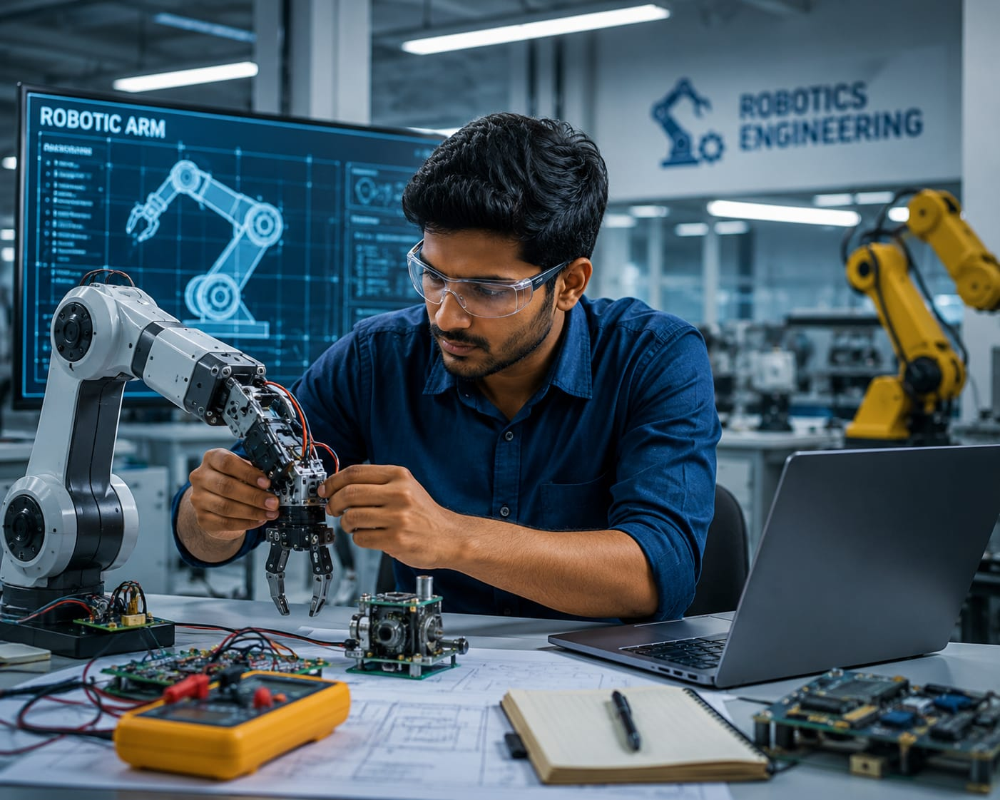

- Imagine a company wants to build a robot that can help workers in a factory.
- The robot must move, pick up objects, and works correctly.
- Robots have motors, sensors, electronic parts, and a strong mechanical structure.
- The person who develops and tests these robotic systems is called a Robotics Engineer.
- 👉 In simple words: Robotics Engineers design, build, and test robots that can perform useful tasks.
Robotics Engineer
🧑💼 What Do They Do?

🎓 How to Become a Robotics Engineer
These diploma courses help students build a foundation in robotics, mechanical systems, electronics, automation, and industrial technology.
Diploma in Mechatronics Engineering
Duration: 3 Years
Eligibility: 10th Pass with Science and Mathematics (Minimum 35%–45% marks)
Entrance Exam: State-level Polytechnic Entrance Exams / Merit-Based Admission
Diploma in Mechanical Engineering
Duration: 3 Years
Eligibility: 10th Pass with minimum 35%–45% marks
Entrance Exam: State-level Polytechnic Entrance Exams / Merit-Based Admission
Diploma in Electrical / Electronics Engineering
Duration: 3 Years
Eligibility: 10th Pass with minimum 35%–45% marks
Entrance Exam: State-level Polytechnic Entrance Exams / Merit-Based Admission
📝 Exam Details
(Click on the exam name to see full details)
Polytechnic Entrance Exam Merit-Based AdmissionNote: After Diploma, you won't usually get a direct core Robotics Engineer role.
Most students continue through B.Tech Lateral Entry or gain additional skills in PLC programming, automation, industrial robotics, and CAD tools.
These degree programs help students learn robotics, automation, electronics, mechanical systems, embedded systems, and intelligent machine design.
B.Tech in Robotics and Automation
Duration: 4 Years
Eligibility: 10+2 Pass with Physics, Chemistry, and Mathematics (Minimum 45%–50% marks)
Entrance Exam: JEE Main / JEE Advanced / State Engineering Entrance Exams
B.Tech in Mechatronics Engineering
Duration: 4 Years
Eligibility: 10+2 Pass with Physics, Chemistry, and Mathematics (Minimum 45%–50% marks)
Entrance Exam: JEE Main / JEE Advanced / State Engineering Entrance Exams
B.Tech in Mechanical Engineering
Duration: 4 Years
Eligibility: 10+2 Pass with Physics, Chemistry, and Mathematics (Minimum 45%–50% marks)
Entrance Exam: JEE Main / JEE Advanced / State Engineering Entrance Exams
📝 Exam Details
(Click on the exam name to see full details)
JEE Main JEE Advanced State Engineering Entrance ExamsNote: Students can also become Robotics Engineers through traditional engineering branches such as Electronics (ECE), Electrical Engineering, or Computer Science Engineering. However, they should build additional skills in robotics programming, embedded systems, automation, control systems, and hands-on robotics projects.
These lateral-entry degree programs help diploma holders advance their knowledge in robotics, automation, mechanical systems, electronics, and intelligent machines.
B.Tech Lateral Entry in Robotics and Automation
Duration: 3 Years (Direct Entry into 2nd Year)
Eligibility: 3-Year Engineering Diploma in Mechatronics, Mechanical, or Automation-related fields
Entrance Exam: State Lateral Entry Entrance Tests (JELET, ECET, etc.)
B.Tech Lateral Entry in Mechatronics Engineering
Duration: 3 Years
Eligibility: 3-Year Engineering Diploma in Mechatronics, Mechanical, or Electronics Engineering
Entrance Exam: State Lateral Entry Entrance Tests
B.Tech Lateral Entry in Mechanical Engineering
Duration: 3 Years
Eligibility: 3-Year Engineering Diploma in Mechanical or Production Engineering
Entrance Exam: State Lateral Entry Entrance Tests
Note: After completing a diploma, lateral entry into a B.Tech program is one of the most common pathways to become a Robotics Engineer.
Students should also build practical skills in robotics programming, PLCs, embedded systems, CAD design, automation, and industrial robotics.
These postgraduate programs help engineers specialize in robotics, automation, intelligent systems, control engineering, and advanced industrial technologies.
M.Tech in Robotics and Automation
Duration: 2 Years
Eligibility: B.Tech / B.E. in Mechanical, Mechatronics, ECE, Electrical, or Computer Science Engineering
Entrance Exam: GATE / State PGCET / University-Specific PG Entrance Exams
M.Tech in Mechatronics Engineering
Duration: 2 Years
Eligibility: B.Tech / B.E. in Core Engineering Disciplines
Entrance Exam: GATE / State PGCET
M.Tech in Control Systems / Instrumentation
Duration: 2 Years
Eligibility: B.Tech / B.E. in Electrical, Electronics, or Instrumentation Engineering
Entrance Exam: GATE / State PGCET
📝 Exam Details
(Click on the exam name to see full details)
GATE State PGCET University PG Entrance ExamsNote: Postgraduate studies help Robotics Engineers gain expertise in robotics design, artificial intelligence, automation systems, control engineering, machine vision, embedded systems, and advanced industrial robotics.
Note:
Age limits, marks, and admission process may vary depending on the college or state.
These courses are available in many colleges and universities across India.
You can choose colleges based on your location, budget, and entrance exams.
🏛️ Top Colleges for Robotics Engineer
(Tap on a college to visit the official website)
After 10th Pass (Diplomas)
PSG Polytechnic College, Coimbatore Government Polytechnic, Pune Sardar Vallabhbhai Patel Polytechnic, Mumbai Government Polytechnic Mumbai, Mumbai Murugappa Polytechnic College, ChennaiAfter 12th Pass (Bachelor's Degrees)
PSG College of Technology, Coimbatore Vellore Institute of Technology (VIT), Vellore SRM Institute of Science and Technology, Chennai Kalinga Institute of Industrial Technology (KIIT), Bhubaneswar MIT World Peace University (MIT-WPU), PuneSTEP 1
Imagine you are working as a Robotics Engineer.
STEP 2
Your company is building a robot for a factory.
STEP 3
You help design the robot's body, motors, and sensors.
STEP 4
You assemble the robot and connect its electronic parts.
STEP 5
You test whether the robot can move and perform its tasks correctly.
STEP 6
If problems occur, you improve the design and test it again.
STEP 7
If you enjoy building machines, solving problems, and working with technology, this career may be right for you.
Where do Robotics Engineers work? (Job Roles + Growth)
These are some roles you can explore in Robotics Engineering.
You usually start with beginner roles and grow with experience.
🟢 Beginner Roles
🔧
Junior Robotics Technician
(After Short-Term Certification / Diploma)
Assembles robotic components and performs basic testing and maintenance.
📋
Graduate Trainee Engineer (Robotics)
(After Diploma / B.Tech)
Assists in robot design, testing, and system integration projects.
🔵 Mid-Level Roles
🤖
Robotics Design & Development Engineer
(After B.Tech + Industrial Certification)
Designs robotic structures, mechanisms, and automation systems.
⚙️
Robotic Systems Automation Engineer
(After B.Tech + Experience)
Programs and integrates industrial robots for automated operations.
🟣 Advanced Roles
🏗️
Lead Robotics Systems Architect
(After M.Tech + Advanced Specialization)
Leads the design and integration of large-scale robotic systems.
🌍
Head of Robotics Engineering & Operations
(After Senior Leadership Experience)
Manages robotics teams and oversees industrial automation projects.
🤖
Robotics Companies
Design, build, and test robotic systems for industrial and commercial applications.
🏭
Manufacturing & Automation Companies
Develop robotic production systems and automate factory operations.
🚗
Automotive & Autonomous Systems Companies
Build robotic platforms, autonomous machines, and smart mobility solutions.
🏥
Healthcare & Medical Robotics
Create robotic devices used in surgery, rehabilitation, and patient care.
🚀
Space, Defense & Research Organizations
Develop advanced robotic systems for exploration, defense, and scientific research.
🌍
Global Robotics Engineering Jobs
Work on robotics design, automation, and system integration projects worldwide.
(Click Yes or No for each question)
1. When you use apps like YouTube, have you ever thought, "How does it know which videos I like?"
2. Are you interested in learning about the systems that recommend videos, songs, and products?
3. When you search a product on a shopping app, have you noticed that the app starts recommending similar products?
4. When a phone recognizes your face and unlocks automatically, have you ever thought, "I want to learn how this is done?"
5. Imagine a mobile phone company asks you to create a face recognition system. You build and test the system so people can unlock their phones using their face. Does this excite you?